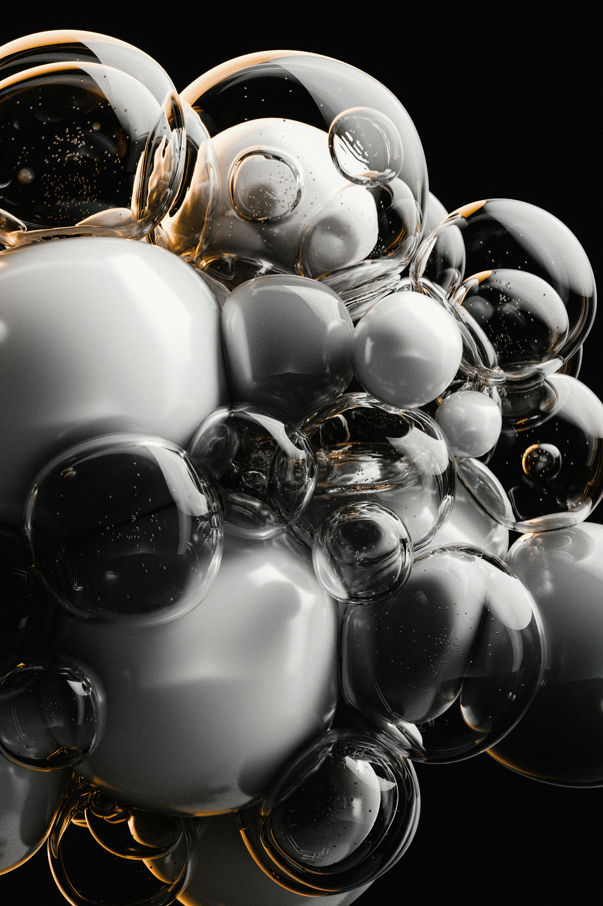
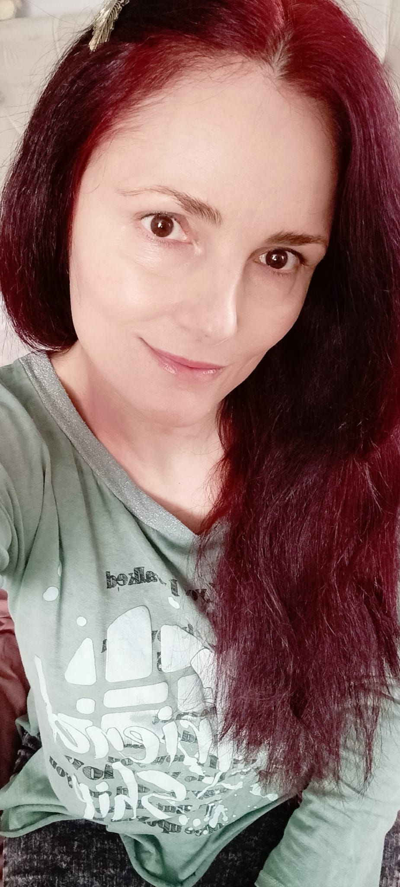
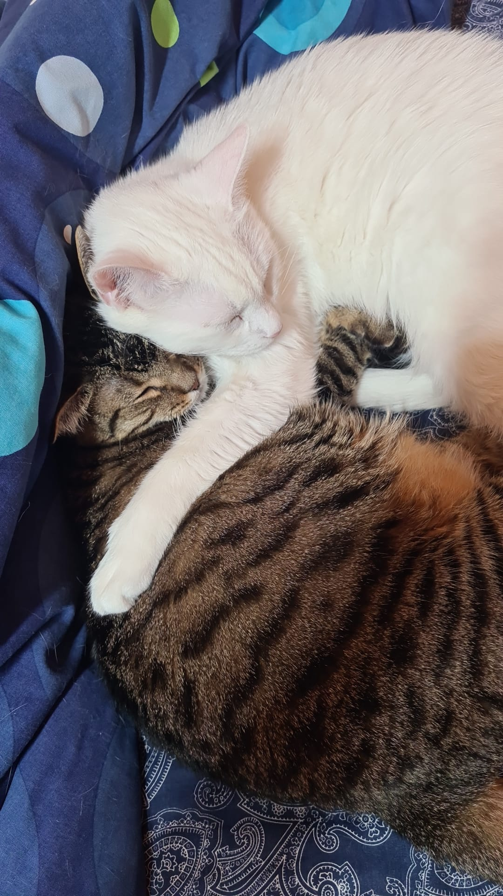
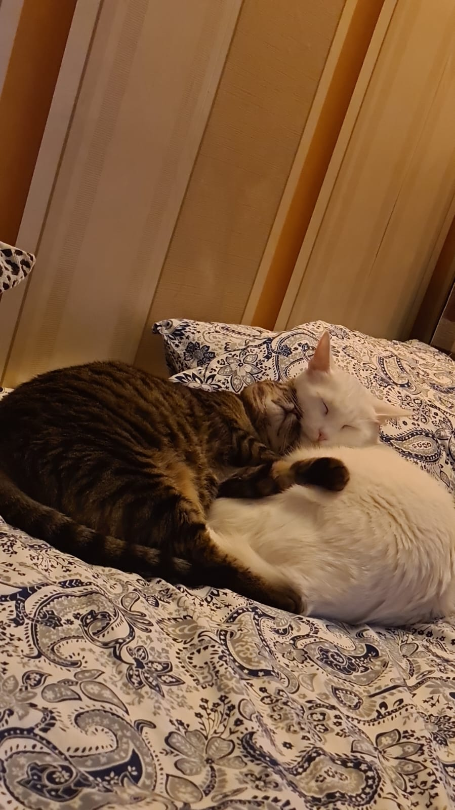

Cateva glume
- Un schelet intră într-un bar si comanda: barman o bere și un mop.
- Ce fac două albine pe Lună?...Luna de miere.

Imi place sa aduc bucurie acolo unde este nevoie. Viata are momentele ei grele insa umorul ramane cea mai accesibila forma de terapie. Un zambet poate schimba totul, este cel mai scurt drum intre doi oameni si cel mai simplu mod de a transforma o zi mai putin buna intr-una mai buna! Prin glume, prin ascultare sau poze cu pisici adorabile, incerc sa aduc un strop de veselie in fiecare zi. Acest blog este locul meu unde pot impartasi aceste lucruri simple care aduc bucurie si sper sa aduca un zambet pe fata ta!
Am creat acest blog pentru a impartasi modalitatile mele preferate de a aduce bucurie. In lumea aglomerata in care traim, cred ca este important sa ne amintim sa ne bucuram de lucrurile simple si sa aducem zambete pe fetele celor din jur. Acest blog este locul meu unde pot impartasi glume, poze cu pisici adorabile si sfaturi despre cum sa fim mai buni cu fiecare zi.



Email: trimite un email